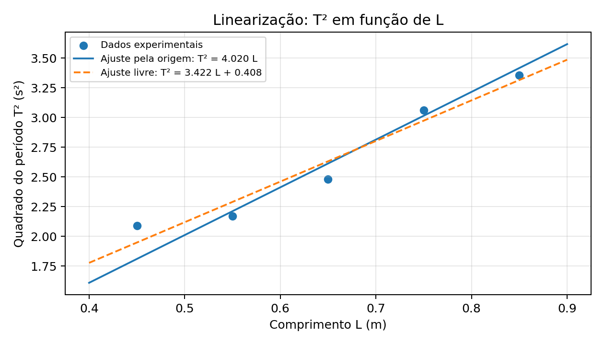

Análise Gráfica
Interpretação dos dados obtidos no experimento.
Figura 1

A tendência geral de crescimento de T com L é compatível com a dependência em √L. As diferenças entre os pontos e a curva ideal exigem cautela na estimativa de g.
Figura 2

No modelo ideal, T² = aL e a = 4π²/g. Ajustando os dados com a reta obrigatoriamente passando pela origem, obtém-se a = 4.0202 s²/m e g = 9.82 m/s². Esse procedimento reproduz aproximadamente o resultado indicado no relatório original. Entretanto, permitindo intercepto diferente de zero, a regressão linear dos mesmos dados fornece T² = (3.4215 s²/m)L + (0.4076 s²), com g estimado pela inclinação de 11.54 m/s². O intercepto relativamente grande sugere dispersão e/ou erro sistemático; não é adequado declarar que a medida de g foi altamente precisa sem justificar o modelo de ajuste e avaliar as incertezas. Não foi possível validar as incertezas de ±0,15, ±0,12 e ±0,18 m/s² declaradas na tabela original, pois não havia demonstração de sua propagação. Por isso, esses valores não são reproduzidos como resultados confirmados. A variação de massa e ângulo não constitui, por si só, uma nova medição independente de g pelo método da inclinação de T² versus L.
Figura 3